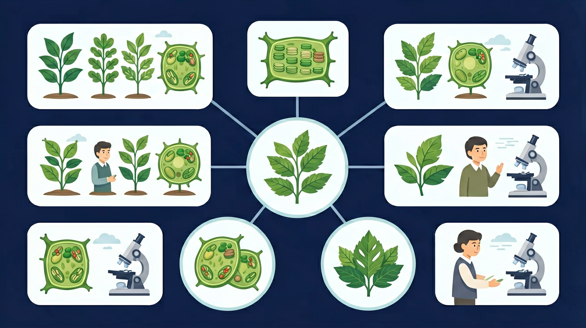

从藻类到被子植物——植物的进化与分类

🎯 能说出藻类/苔藓/蕨类/裸子/被子植物的5个关键特征
🎯 能判断给定植物所属类群及其进化地位
🎯 能分析不同类群结构与环境的适应性关系
无根、茎、叶分化；大多生活在水中；以孢子繁殖；代表：水绵、海带、衣藻
无维管束 无种子有茎和叶，无真正的根（假根）；无维管束；生活在阴湿环境；孢子繁殖；代表：葫芦藓
无维管束 无种子有根、茎、叶；有维管束（输导组织）；能在较干燥环境生存；孢子繁殖；代表：肾蕨、蕨
有维管束 无种子有根、茎、叶；有维管束；种子裸露（无果皮包被）；花粉管授粉；代表：松、柏、银杏
有维管束 有种子有根、茎、叶、花、果实、种子六大器官；种子有果皮包被；适应性最强；代表：水稻、苹果、玫瑰
有维管束 有种子 有花果实❓ 为什么藻类植物都生活在水里？
❓ 苔藓为什么长不高？和树比缺了什么？
❓ 银杏是裸子植物，那它的种子到底藏在哪里？
学完这一课，这些问题你都能自信地回答。
下列哪类植物具有维管束？
松树的种子裸露在何处？
| 类群 | 根茎叶 | 维管束 | 种子 | 花果实 | 繁殖方式 | 生境 |
|---|---|---|---|---|---|---|
| 藻类 | 无 | 无 | 无 | 无 | 孢子/分裂 | 水中 |
| 苔藓 | 有茎叶,假根 | 无 | 无 | 无 | 孢子 | 阴湿陆地 |
| 蕨类 | 有 | 有 | 无 | 无 | 孢子 | 阴湿陆地 |
| 裸子 | 有 | 有 | 有(裸露) | 无 | 种子 | 各种陆地 |
| 被子 | 有 | 有 | 有(包被) | 有 | 种子 | 各种环境 |
大型褐藻，无真正根茎叶，全身吸收营养
苔藓代表，高约数厘米，假根固定不吸水
蕨类植物，叶背面有孢子囊群，茎有维管束
裸子植物活化石，种子银白色，无果皮包被
被子植物，花→受精→果实（肉质），种子在果实内
从细胞→组织→器官层面拆解不同类群的结构差异
用'从水生到陆生'解释植物器官的进化逻辑
对比藻类无根茎叶与被子植物的完整器官系统
观察苔藓假根与蕨类真根的横切面显微图
用进化规律解释为什么水果多是被子植物
关于植物类群演化顺序正确的是
比较水池、墙角、花坛三个区域的植物形态差异
将下列植物拖入正确的类群框中
1. 下列植物中，属于苔藓植物的是（ ）
2. 区分裸子植物和被子植物最本质的特征是（ ）
3. 蕨类植物与苔藓植物相比，进化上的主要进步是（ ）
4. 被子植物是植物界中最高等的类群，其原因是（ ）
先独立作答，再点选项查看对错与错因。
下列哪种植物的繁殖方式与其他三种明显不同？
实验室显微镜下观察到某植物没有真正的根，只有假根，这可能是
下列特征最能区分藻类与苔藓植物的是
蕨类植物比苔藓植物高等的主要表现是具有真正的____和____组织
答案：根、输导
蕨类出现根和维管束结构
校园里松树属于____植物亚门，其种子外没有____包被
答案：裸子、果皮
裸子植物种子裸露
✅ 只有被子植物有真正的花
💡 将日常经验与科学分类混淆
✅ 地钱属于苔类，苔藓是藓类
💡 忽视苔藓植物门的细分
口诀：藻苔蕨裸被，水生到陆生，结构渐复杂，种子是关键
类比：植物进化像搬家：藻类住水下→苔藓住岸边→蕨类搬陆地→裸子带帐篷→被子有房子
（中考题）下列植物进化顺序正确的是：
香蕉的种子退化，它属于：
若发现某化石植物有根但无种子，它可能是：